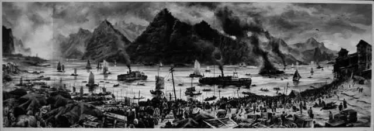

在短短40天内，在极其有限的运力条件下，中国人把停驻在宜昌的13万吨货物和3万余人员转运至四川，保住了民族工业的命脉和大批人才。危难时刻见英雄。时年45岁的卢作孚指挥20余艘货船和800余艘木船，冒着日机的猛烈轰炸，来回奔波在凶险的峡江之上。卢作孚采用“三段航行”法——将航段划分为宜昌到奉节三斗坪、三斗坪到万县、万县到重庆三段，根据水域情况安排合适的船舶负责运输，提高运输效率；实施客运舱“座票制”，将原来二等铺位一律改为座票，增加客运量；增加码头设备，提高装卸力量；做好人员安排，强化监督执行。他用40天的时间完成了一年才能达成的运送量，为中国抗战抢救出3万余人和10万余吨货物，从而保存了中国民族工业的命脉。为此，卢作孚的民生公司有16艘船只被炸沉炸毁，69艘船舶被炸伤，117名员工壮烈牺牲，76名员工伤残。 |
宜昌大撤退 | |
| 返回 | ||
|  |